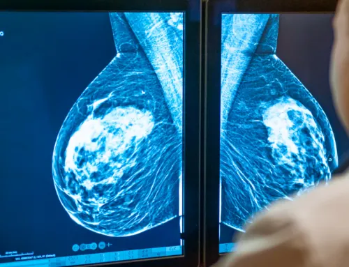

Large case volumes managed by sub-specialty radiologists — for consistent, time-efficient and accurate interpretations across every modality.

From MRI and CT to mammography and ultrasound, each study is matched to a sub-specialty radiologist — ensuring consistent, accurate and clinically meaningful reports.
Heart and cardiovascular imaging interpretation by specialist radiologists.
Breast imaging and screening with precise, structured reporting.
Cancer-related imaging and comprehensive body imaging studies.
Bones, joints, ligaments and the wider musculoskeletal system.
Brain, spine and nervous system imaging interpretation.
General X-ray interpretation and standardized reporting.
Ultrasound and vascular Doppler studies, reported with care.
Our sub-specialty radiologists cover a broad spectrum of imaging. Tell us your requirement.
Ask our team →Key differentiators that make our reporting dependable, day and night.